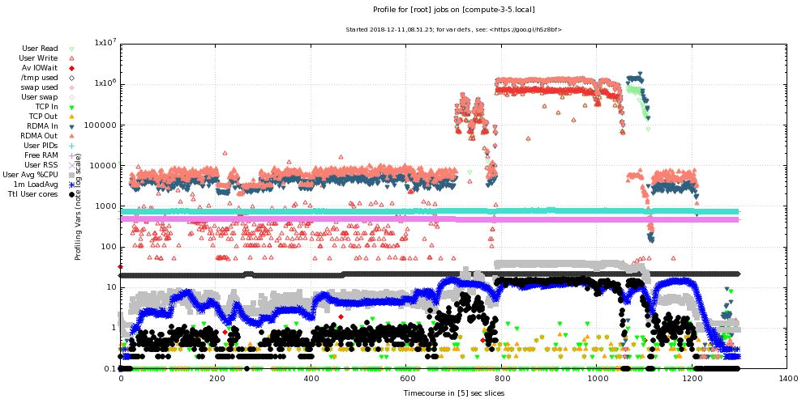
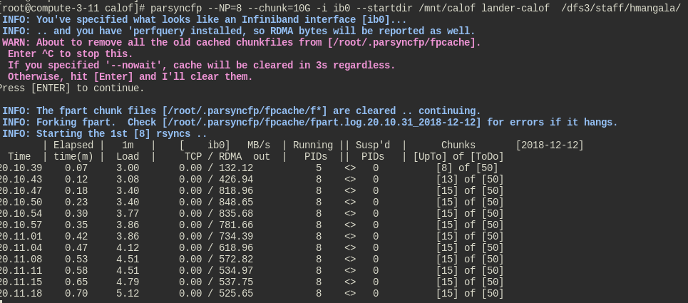

by Harry Mangalam <hjmangalam@gmail.com> v1.57, Mar 20, 2019
The image below is a screenshot of a profilemyjobs profiling of a 16-way backup of about 50TB of data from one BeeGFS filesystem to another over QDR Infiniband (mixed RDMA and TCPoIB). Much of it was already synced, but at timepoint 800, a substantial amount was not, resulting in a combined 1.4 GB/s transfer.


1. Overview
rsync is a fabulous data mover. Possibly more bytes have been moved (or have been prevented from being moved) by rsync than by any other application.
So what’s not to love?
For transferring large, deep file trees, rsync will pause while it generates lists of files to process. Since Version 3, it does this pretty fast, but on sluggish filesystems, it can take hours or even days before it will start to actually exchange rsync data.
Second, due to various bottlenecks, rsync will tend to use less than the available bandwidth on high speed networks. Starting multiple instances of rsync can improve this significantly. However, on such transfers, it is also easy to overload the available bandwidth, so it would be nice to both limit the bandwidth used if necessary and also to limit the load on the system.
parsyncfp tries to satisfy all these conditions and more by:
-
using the fpart file partitioner which can produce lists of files very rapidly
-
allowing re-use of the cache files so generated.
-
doing crude loadbalancing of the number of active rsyncs, suspending and unsuspending the processes as necessary.
-
using rsync’s own bandwidth limiter (--bwlimit) to throttle the total bandwidth.
-
using rsync’s own vast option selection is available as a pass-thru (tho limited to those compatible with the --files-from option).
As a warning, the main use case for parsyncfp is really only very large data transfers thru fairly fast network connections (>1Gb). Below this speed, rsync itself can saturate the connection, so there’s little reason to use parsyncfp and in fact the overhead of testing the existence of and starting more rsyncs tends to worsen its performance on small transfers to slightly less than rsync alone.
Beyond this introduction, parsyncfp’s internal help is about all you’ll need to figure out how to use it; below is what you’ll see when you type parsyncfp -h. There are probably still edge cases where parsyncfp will fail or behave oddly, especially with small data transfers, so I’d be happy to hear of such misbehavior or suggestions to improve it.
2. Download
If you already know you want it, get the parsyncfp tarball here (contains parsyncfp plus the fpart, stats, and scut utilities below)
Extract it into a dir on your $PATH and after verifying the other dependencies below, give it a shot.
It is also hosted on github if you’d rather interact with the code there (and where I handle bug reports and fixes)
2.1. Dependencies
parsyncfp requires the following utilities to work:
-
ethtool - std Linux tool for probing ethernet interfaces. Install from repositories.
-
iwconfig - std Linux tool for probing wireless interfaces. Install from repositories.
-
ifstat - std Linux tool for extracting metrics from network interfaces. Install from repositories.
-
fpart - a file partitioner that allows fast startup. Precompiled executable for 64b Linux is here.
-
stats - self-writ Perl utility for providing descriptive stats on STDIN
-
scut - self-writ Perl utility like cut that allows regex split tokens
-
many standard Linux utilities
3. parsyncfp help
parsyncfp --help
or just
parsyncfp
will dump its help pages in the less pager.
Below is what you should see:
(The following is a slightly HTML-spiffed version of the normal parsyncfp help.)
parsyncfp version 1.57 Mar 20, 2019 by Harry Mangalam <hjmangalam@gmail.com> parsyncfp is a Perl script that wraps Andrew Tridgell's miraculous 'rsync' to provide some load balancing and parallel operation across network connections to increase the amount of bandwidth it can use. The 'fp' variant uses 'fpart' to bypass the need for a full recursive descent of the dir trees before the actual transfer starts. Do NOT try to use rsync --delete options'. More help with '--help' parsyncfp is distributed under the Gnu Public License (GPL) v3. The only native rsync option that parsyncfp uses is '-a (archive). If you need more, then it's up to you to provide them ALL via '--rsyncopts'. parsyncfp checks to see if the current system load is too heavy and tries to throttle the rsyncs during the run by monitoring and suspending / continuing them as needed. parsyncfp uses fpart <http://goo.gl/K1WwtD> to create chunkfiles for rsync to read, bypassing the need to wait for a complete recursive scan. ie, it starts the transfer immediately. For large deep trees, this can be useful. It appropriates rsync's bandwidth throttle mechanism, using '--maxbw' as a passthru to rsync's 'bwlimit' option, but divides it by NP so as to keep the total bw the same as the stated limit. It monitors and shows network bandwidth, but can't change the bw allocation mid-job. It can only suspend rsyncs until the load decreases below the cutoff. If you suspend parsyncfp (^Z), all rsync children will suspend as well, regardless of current state. Unless changed by '--interface', it assumes and monitors the routable interface. The transfer will use whatever interface normal routing provides, normally set by the name of the target. It can also be used for non-host-based transfers (between mounted filesystems) but the network bandwidth continues to be (pointlessly) shown. [NB: Between mounted filesystems, parsyncfp sometimes works very poorly for reasons still mysterious. In such cases, I recommend the fpsync tool contained in the fpart package above]. It only works on dirs and files that originate from the current dir (or specified via "--startdir"). You cannot include dirs and files from discontinuous or higher-level dirs. parsyncfp also does not use rsync's sophisticated/idiosyncratic treatment of trailing '/'s to direct where files vs dirs are sent; dirs are treated as dirs regardless of the trailing '/'. ** the [.parsyncfp] files ** The [.parsyncfp] dir contains the cache dir (fpcache), and the time- stamped log files, which are not NOT overwritten. ** Odd characters in names ** parsyncfp will refuse to transfer some oddly named files (tho it should copy filenames with spaces fine. Filenames with embedded newlines, DOS EOLs, and some other odd chars will be recorded in the log files in the [.parsyncfp] dir.
3.1. OPTIONS
[i] = integer number [s] = "quoted string"
[f] = floating point number ( ) = the default if any
--NP|np [i] (sqrt(#CPUs)) .............. number of rsync processes to start
optimal NP depends on many vars. Try the default and incr as needed
--altcache|ac (~/.parsyncfp) ..... alternative cache dir for placing it on a
another FS or for running multiple parsyncfps simultaneously
--startdir|sd [s] (`pwd`) .................. the directory it starts at(*)
--maxbw [i] (unlimited) ........... in KB/s max bandwidth to use (--bwlimit
passthru to rsync). maxbw is the total BW to be used, NOT per rsync.
--maxload|ml [f] (NP+2) .......... max system load - if loadavg > maxload,
an rsync proc will sleep for 10s
--chunksize|cs [s] (10G) .... aggregate size of files allocated to one rsync
process. Can specify in 'human' terms [100M, 50K, 1T]
as well as integer bytes.
--rsyncopts|ro [s] ... options passed to rsync as quoted string (CAREFUL!)
this opt triggers a pause before executing to verify the command(+)
--interface|i [s] ...... network interface to monitor (not use; see above)
Only SENT bytes are displayed.
--checkperiod|cp [i] (3) ........ sets the period in seconds between updates
--verbose|v [0-3] (2) ....sets chattiness. 3=debug; 2=normal; 1=less; 0=none
This only affects verbosity post-start; warning & error
messages will still be printed.
--dispose|d [s] (l) .... what to do with the cache files. (l)eave untouched,
(c)ompress to a tarball, (d)elete.
--email [s] ..................... email address to send completion message
--nowait ............. for scripting, sleep for a few s instead of pausing
--version ................................. dumps version string and exits
--help ......................................................... this help
(*) you can use globs/regexes with --startdir, but only if you're at that
point in the dir tree. ie: if you're not in the dir where the globs can be
expanded, then the glob will fail. However, explicit dirs can be set from
anywhere if given an existing startdir.
(+) the '--rsyncopts' string can pass any rsync option to all the rsyncs that
will be started. This allows options like '-z' (compression) or '--exclude-from'
to filter out unwanted files. Use any 'delete' options carefully tho.
3.2. Hints & Workarounds
IMPORTANT: rsync '--delete' options will not work with '--rsyncopts' bc the
multiple parallel rsyncs that parsyncfp launches are independent and therefore
don't know about each other (and so cannot exchange info about what should
be deleted or not. Use a final 'rsync --delete' to clean up the transfer
if that's your need.
If you see an error related to "sh: /usr/bin/ls: Argument list too long",
it usually means that fpart has generated a huge list of chunkfiles (10s
of 1000s) and 'ls' has trouble processing that many. This is usually
due to pointing parsyncfp at a huge filesystem, with millions of files,
with a chunksize that's too small (resulting in the above-noted too many
chunkfiles). You can either increase the chunksize ('--chunksize=100G)
which will result in a smaller number of chunk files to process, or split
up the source dirs among multiple parsyncfps (which can be done using the
'--altcache' option above).
3.3. Examples
3.3.1. Good example 1
% parsyncfp --maxload=5.5 --NP=4 --chunksize=$((1024 * 1024 * 4)) \ --startdir='/home/hjm' dir[123] hjm@remotehost:~/backups
where:
-
"--maxload=5.5" will start suspending rsync instances when the 1m system load gets to 5.5 and then unsuspending them when it goes below it.
-
"--NP=4" forks 4 instances of rsync
-
"--chunksize=$1024 * 1024 * 4" sets the chunksize, by multiplication or by explicit size: 4194304
-
"--startdir=/home/hjm" sets the working dir of this operation to /home/hjm and dir1 dir2 dir3 are subdirs from /home/hjm
-
the target "hjm@remotehost:~/backups" is the same target rsync would use
It uses 4 instances to rsync dir1 dir2 dir3 to hjm@remotehost:~/backups
3.3.2. Good example 2
% parsyncfp --checkperiod 6 --NP 3 --interface eth0 --chunksize=87682352 \ --rsyncopts="--exclude='[abc]*'" nacs/fabio hjm@moo:~/backups
The above command shows several options used correctly:
-
--chunksize=87682352 - shows that the chunksize option can be used with explicit integers as well as the human specifiers (TGMK).
-
--rsyncopts="--exclude=\[abc]*\'' - shows the correct form for excluding files based on regexes (note the quoting)
-
nacs/fabio - shows that you can specify subdirs as well as top-level dirs (as long as the shell is positioned in the dir above, or has been specified via --startdir
3.3.3. Good example 3
% parsyncfp -v 1 --nowait --ac pfpcache1 --NP 4 --cp=5 --cs=50M --ro '-az' linux-4.8.4 moo:~/test
The above command shows:
-
short version of several options (-v for --verbose, --cp for checkperiod, etc)
-
shows use of --altcache (--ac pfpcache1), writing to relative dir pfpcache1
-
again shows use of --rsyncopts (--ro -az) indicating archive & compression'.
-
includes --nowait to allow unattended scripting of parsyncfp
3.3.4. Error example 1
% pwd /home/hjm # executing parsyncfp from here % parsyncfp --NP4 /usr/local /media/backupdisk
why this is an error:
-
--NP4 is not an option (parsyncfp will say "Unknown option: np4" It should be --NP=4 or --NP 4
-
if you were trying to rsync /usr/local to /media/backupdisk, it will fail since there is no /home/hjm/usr/local dir to use as a source. This will be shown in the log files in ~/.parsync/rsync-logfile-<datestamp>_# as a spew of "No such file or directory (2)" errors
The correct version of the above command is:
% parsyncfp --NP=4 --startdir=/usr local /media/backupdisk